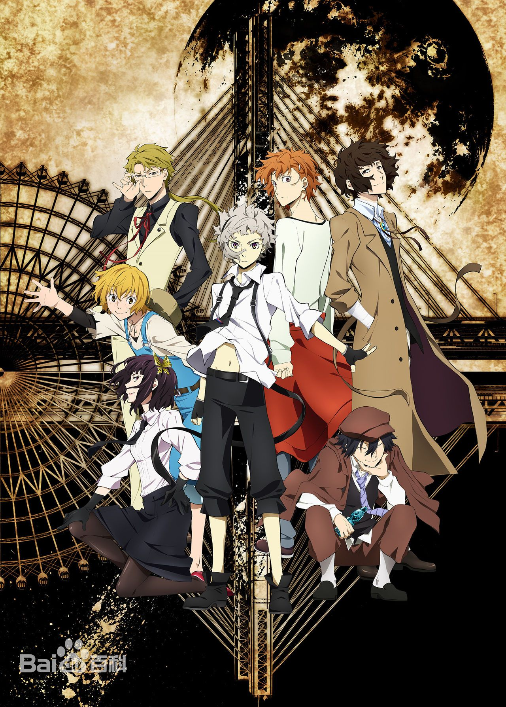
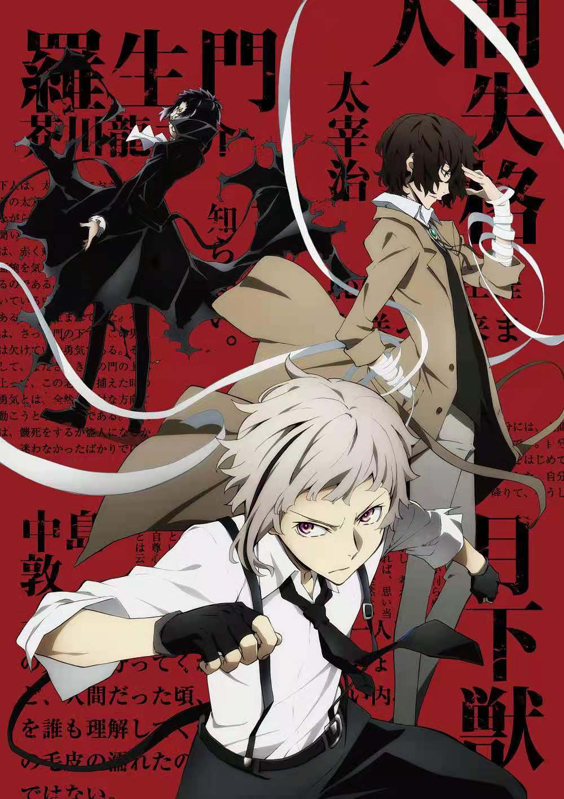
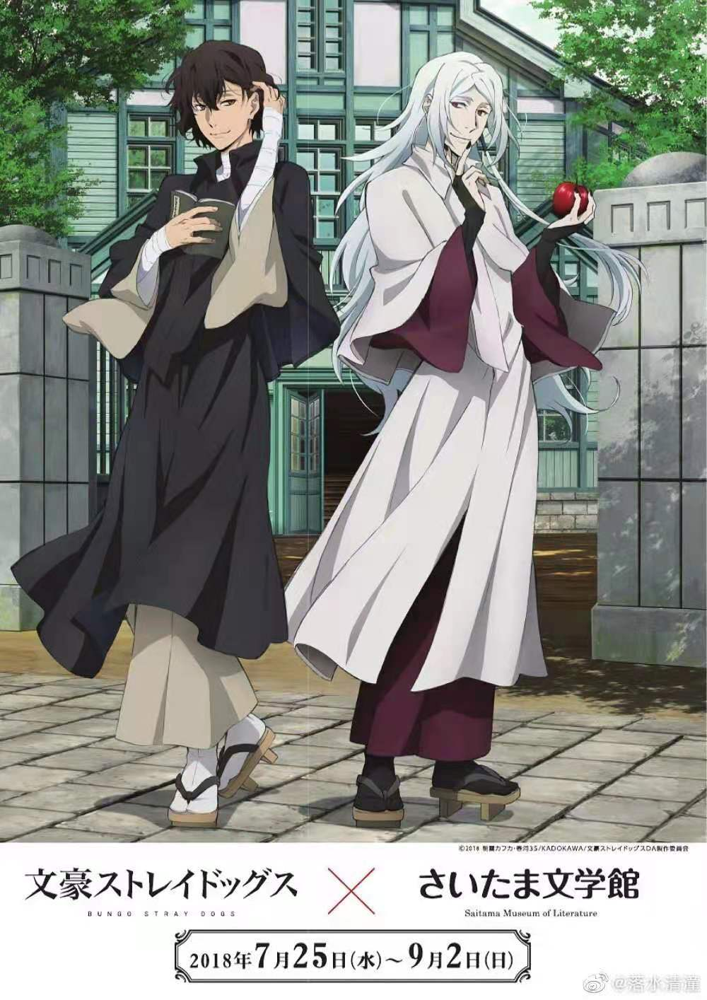

剧情简介
被孤儿院赶出、濒临饿死边缘的少年·中岛敦与一群风格奇异的男人们相遇了——热衷于大白天跳水自杀、有着自杀嗜好的男子·太宰治。总是神经质地翻阅手帐的、戴着眼镜的男子·国木田独步。他们是、能解决连军队和警察都束手无策的怪异事件的“武装侦探社”的成员。因为某种原因，敦被要求一起同行去击退使街道巷尾都骚动不已的“食人虎”……架空的都市 横滨。怀有文豪之名的人物、登场。借此之名各类异形的力量如火花四散。千奇百怪的文豪异能力战斗，在这里开幕！

角色介绍
中岛敦——是在《文豪野犬》中登场的主人公，男主角，孤儿院出身，有些自卑，但对待身边的人很温柔，在紧急关头，即使牺牲自己也要守护别人，而且会做大胆的行为。太宰治——漫画《文豪野犬》的主要角色之一。异能力集团“武装侦探社”的一员，表面上开朗与神秘的青年，国木田独步的搭档，乱步称其为“我也看不透的男人”。加入侦探社之前的工作是侦探社的七大不可思议之一，猜中其前一份工作的奖金已经积累到了70万。原港口黑手党干部，为芥川龙之介的领导人，被称作“历代最年轻的干部”，森鸥外登上首领之位的“证人”，且当时与中原中也为搭档，并称“双黑”。

动画音乐
OP1《TRASH CANDY》、OP2《Reason Living》、OP3《セツナの爱》、ED1《名前を呼ぶよ》、ED2《风が吹く街》、ED3《Lily》